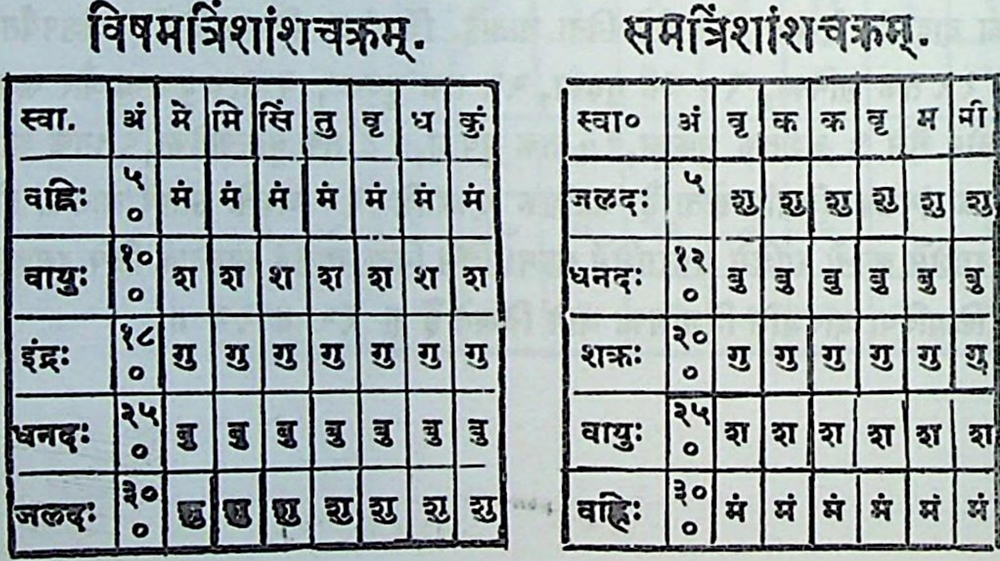

( & ) सवीथीविन्तानणिः। द्वादशाशच्छम् । | ५ | ६.।७| ८ ञु चं ख. | बु | ख| मं २|१|२ २०।मअ् अ ५|२|३ | ४|५| ६|७| < | ९ |१०|१९।१२| ९ ० | बु चं ख |ञु|ख्|म गरदा दर| मं आ शि । भ ज ` भ [व भ भ 9 = भः द (| च = हि ९९ | ६ | ७ ९, |१०।१९।१२। {।२ गणेशः -_- ¦ -- । ४ क १ 7 १1 ति षकं तट ( ल | > --- = ह ति ` गि कः भः भः ~----- | ~~ जा र मायि (|= स = का न = > "~ । = ~~ , - ~~ = ट (4 -18 884 २०|द]ु |न | ८ | ९, ६1 ९, {{० ३०| गृ श गु १० 11 (4. 1 १२ ‹ चर |स गणेङ्ञाः [२९ ० | ४५. ¢ [& ‰ = 0
